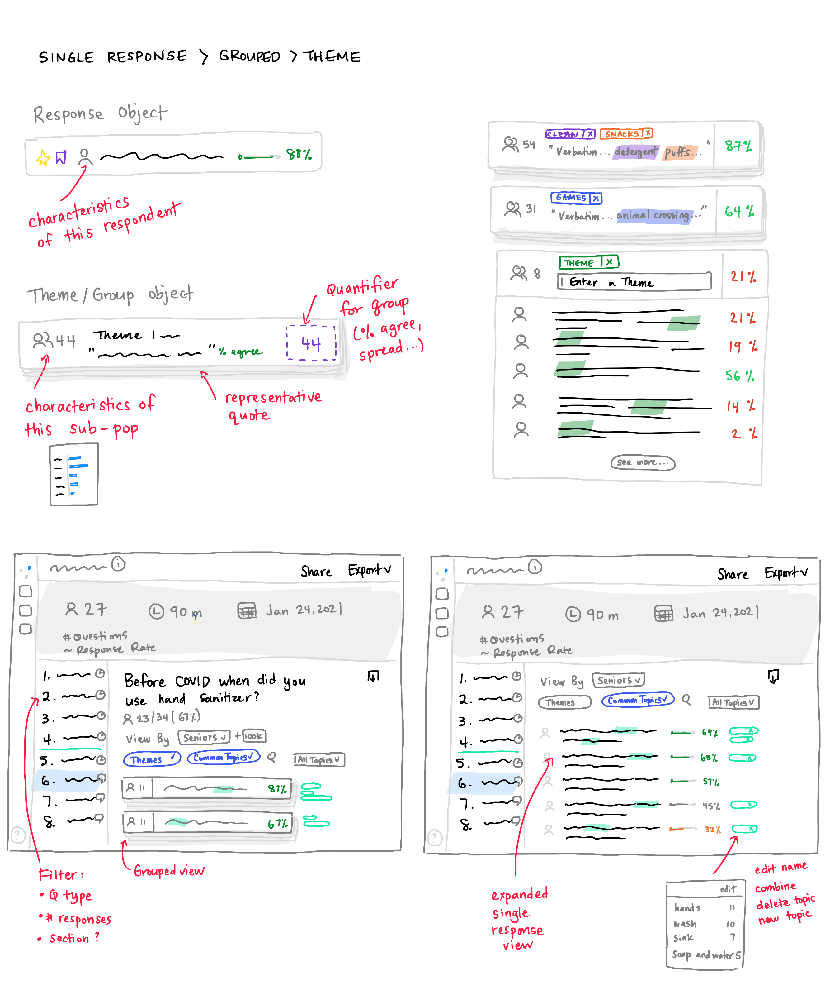

Recognize themes in text analysis with AI support
Remesh.ai fills a need for deep understanding of a group of people at a scale that is larger than typical qualitative research solutions.
This project builds on top of the analysis foundation of interactive data visuals and exports I designed. In this phase I investigate an unwieldy and incomplete text-analysis process. I respond with a hybrid solution of manual and AI tools to meet the need for recognizing themes from a body of text.
My team and I partnered with our data science experts and considered the latest technologies available to us. We learned that these technologies were not necessarily embraced by researchers across the research industry, however AI tools can still deliver a certain benefit.
Problem
Researchers struggle to make sense of open-ended responses collected on Remesh
Research teams choose Remesh to fill a need for in-depth qualitative understanding from a large sample of their target audience. Since responses are being collected from many individuals, the number of responses to analyze also swell beyond standard qualitative methods.
Open-ended data takes longer to analyze than closed-ended data
Open-ended text responses allow participants to provide their unbiased and unprompted responses to a question. These responses give researchers rich information but are also highly labor-intensive to analyze compared with predetermined options. However they do contain patterns and repeated themes which researchers are looking to catalogue and understand.
Text Analysis Workflow
View the full research workflow here.
Objective
How might we help researchers identify and assess themes from text responses?
While we had tools for researchers to view common terms and also to understand how resonant responses were with other participants, these solutions were piecemeal and incomplete.
Summarizing responses semantically is a key step in text analysis. We didn't have a way for researchers to quickly understand what participants said, what was being repeated, and how often.
Solution
Let's view our solution in context of the existing text analysis features: two tools called Common Topics and Highlights, both which relied on AI.
Two ends of a spectrum
Highlights was particularly confusing for users. The intention was to organize responses into 10 groups that might be viewed as a proxy for themes. So far so good. But the method of organizing was unorthodox, based on participant voting behavior rather than on the meaning of responses. This surfaced a common issue of group duplicates which further eroded confidence in the tool.
On the other end of the spectrum, Common Topics were automatically determined through tf-idf calculations. While it was a good start, the algorithm was not tailored enough to prevent issues like duplicates for plurals or individually identifying topics that should have been presented under one topic. This solution was too granular and not yet intelligent enough to be viable.
A blend of manual and AI tools
We planned to level up both manual and automated tooling for users—fully manual solutions cut against our organizational positioning as an AI-driven product, while automated theming methods suffered from researcher skepticism.

Our Solution
- Educate - embed educational sign posts about AI tools within the platform and workflow
- Refine Common Topics - tailor the model to collapse plurals and obvious duplicates
- Improve manual theme finding - revisit how to present responses in context of other information, and to better utilize search and filtering tools
- Automate themes by meaning - integrate cluster analysis method to show groups based on responses that express similar meaning to one another
Final Snapshot
Impact
Heading in the right direction with more opportunity
Researchers repeatedly spoke about the challenge of capturing subtleties in language accurately. A response may have been offered up satirically or in an earnest deadpan. Still, engagement with AI tools over manual ones demonstrates an interest in shortcutting historically all-manual methods.
Opportunity remains to narrow the gap in meaningfully summarizing responses. As a start, sentiment labeling and thematic clusters have leveled up researcher capacity especially in the early stages of their analysis process.
* 4-month average measurement
How we got there
Discovery Research
A researcher's text analysis workflow.
Workflow Friction
- Missing context - In Highlights, selected responses were presented in isolation of other responses. It was hard for users to understand how they were generated and to accept them.
- AI limitations - AI features excited prospect users during demos. But during analysis, researchers struggled to explain automated results to stakeholders.
- Time vs. quality - Reading every response is time-consuming and unscalable, but researchers didn't have an alternative that yielded results they could stand behind.
- Behind competitors - Customers expected a level of text-analysis parity with main competitors: sentiment analysis, NLP, cluster analysis, statistical analysis to name a few.
- Reports need visuals - Researchers struggled to visualize the output of open-ended questions in reporting.
Design Explorations
In early sketches, I considered how to let users navigate between a single response to a broader group of similar responses without losing context.
I explored various forms for integrating responses with manual tools: search and Common Topics filtering.
I also experimented with condensing several data dimension into a single graphic to paint a more holistic story. Users liked the visuals, but it was difficult to find the right level of summarization and intersection that worked across various questions and stood up to data drill-downs.
Didn't make the cut: Visuals intersecting topics, topic frequency, and participant agreement.
Testing for Value
We presented 6 possible directions to internal users and walked through their text analysis workflow to understand which aspects might help them. We refined a version based on their input to test with customers.
Our options gave a spectrum of manual to AI and blended solutions. Our internal team raised the most uncertainty over AI tools while many customers shared that they already used methods like sentiment labeling in their process.
Testing for Accuracy
To ensure that researchers would accept the output of AI features, we ran tests for two of the most promising options, sentiment labels and automatic response grouping, using actual project data.
For sentiment, we learned that there is subjectivity in how a response could be interpreted, but having the labels as an organizing method still provided a very useful first pass of the data.
Comparing automatic sentiment labeling against a researcher's manual labeling
The testers were even more enthusiastic about automatically grouping responses. It provided the type of expected summarized view that Highlights could not.
Internal researchers were surprised by how relevant automatically grouped responses were compared with their own assessment.
Learnings
AI is not a panacea
Trust remains a critical factor in the adoption and value of AI tools. If a user cannot explain their findings to their boss or a client, they will skip it.
AI is a very useful stepladder
Users found AI tools helpful for quickly sketching out the outline of their final report. It also helped them by pointing out where responses were less clear-cut. However, researchers still needed to spend time reading and digesting the responses to familiarize themselves with the findings.
My Role
Sr. product designer
Tasks
User research
Competitive analysis
UX UI design
Concept validation
Visual QA
Team
Sr. product manager
Engineering manager
Data scientist
Engineers (4)
QA engineer
Duration